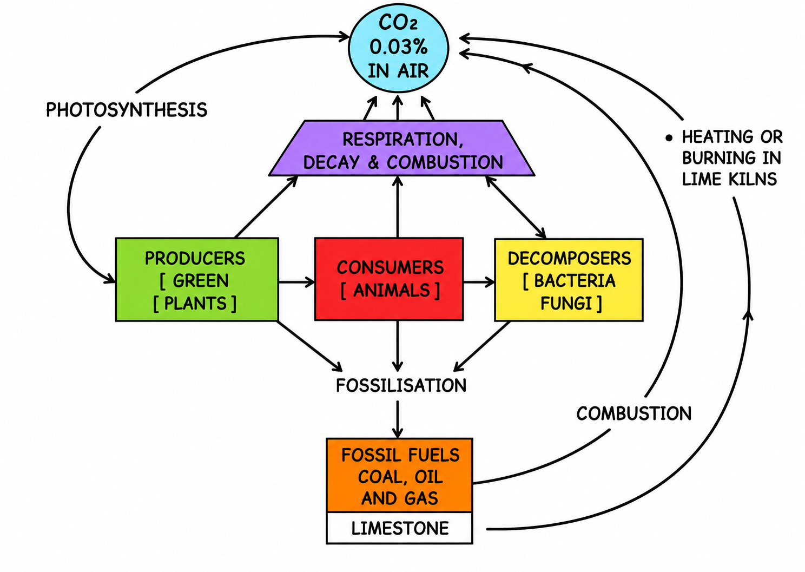

Photosynthesis: Provider of Food for All
ICSE Class 10 Biology • Chapter 06 • Detailed Master Notes
Photosynthesis is the most significant life process. It provides food
for all animal life (including humans) and the life-supporting free
oxygen gas in the atmosphere for breathing.
6.1 What is Photosynthesis?
Photosynthesis is the process by which living plant
cells, containing chlorophyll, produce food substances (glucose and
starch), from carbon dioxide and water, by using light energy. Plants
release oxygen as a by-product during this process.
Importance of Photosynthesis:
-
Provides food for all: Plants are the ultimate source
of food and energy for all living organisms (directly for herbivores,
indirectly for carnivores).
-
Provides Oxygen: It is the only biological process
that releases free oxygen into the atmosphere, which is essential for
respiration and combustion.
6.2 Chlorophyll — The Vital Plant Pigment
Chlorophyll is the green pigment found in plants. It is contained in
microscopic cell organelles called
Chloroplasts.
-
Chloroplasts are minute oval bodies bounded by a double membrane.
-
Their interior contains closely packed flattened sacs (thylakoids)
arranged in piles called grana.
-
The colourless ground substance is called the stroma.
-
Chlorophyll is contained directly in the walls of the thylakoids. It
is a highly complex substance, composed of carbon, hydrogen, oxygen,
nitrogen, and magnesium.
 and Stroma. (Very Im.png)
Fig. 6.3 & 6.4: Three dimensional and highly magnified diagrammatic
view of a chloroplast showing Grana (thylakoids) and Stroma.
(Very Important for ICSE exams)
Interesting Facts about Chlorophyll:
There are nine types of chlorophyll. The two most prominent are
Chlorophyll-a and Chlorophyll-b. Chlorophyll absorbs light at both
ends of the visible spectrum (blue and red light) and reflects the
green light. That is why leaves appear green!
Too much light destroys chlorophyll. However, it is continuously
reformed by the plant (provided there is light).
Location of Chloroplasts
Chloroplasts are mainly contained in the
mesophyll cells located between the upper and lower
epidermis of leaves. These are of two types: palisade cells and spongy
cells. They are also found in the guard cells of stomata and in the
outer layers of young green stems.
6.3 Regulation of Stomatal Opening for Letting in $CO_2$
Stomata are minute openings occurring in large numbers on the lower
surface of a dicot leaf. The main function of stomata is to let in
$CO_2$ from the atmosphere for photosynthesis. When stomata are open,
water is lost by transpiration.
The closing and opening of stomata are controlled by the
Guard cells. Two main theories explain
this mechanism:
1. Potassium Ion ($K^+$) Concentration Theory (Recent & Accepted)
According to recent researchers, the stomatal opening depends on the
generation of potassium ion ($K^+$) gradient.
-
During the day: The chloroplasts in the guard cells
photosynthesize, leading to the production of ATP. This ATP is used to
actively pump Potassium ions ($K^+$) from the
adjacent subsidiary cells into the guard cells. This increased $K^+$
concentration makes the guard cells hypertonic, drawing in water by
endosmosis. The guard cells become turgid and bulge
outwards, opening the stoma.
-
During the night: The $K^+$ ions leak out of the
guard cells, reducing their concentration. Water leaves the guard
cells by exosmosis, making them flaccid, and the
stoma closes.

Fig. 6.5 & 6.6: Diagrammatic representation of opening and closing of
stoma based on the Potassium ion ($K^+$) concentration theory.
(Highly important ICSE diagram)
2. Sugar Concentration Theory (Old)
During the daytime, guard cells photosynthesize and produce sugar
(glucose). This increases the osmotic pressure of the cell sap, causing
endosmosis. The guard cells become turgid and the stoma opens. At night,
the sugar is converted into insoluble starch, lowering the osmotic
pressure, causing exosmosis and closing the stoma.
6.4 The Process of Photosynthesis
(Note: It is important to write $12H_2O$ on the reactant side and
$6H_2O$ on the product side to accurately represent the photolysis of
water).
Phases of Photosynthesis
Photosynthesis occurs in two main phases:
A. Light-Dependent Phase (Photochemical Phase)
This phase takes place in the Thylakoids (Grana) of
the chloroplasts because it requires light energy.
-
Activation of Chlorophyll: Chlorophyll molecules
absorb photons of light and become activated.
-
Photolysis of water: The absorbed energy is used to
split water molecules into hydrogen ions ($H^+$) and oxygen.
$$ 2H_2O \xrightarrow{\text{light energy}} 4H^+ + 4e^- + O_2
\uparrow $$ The oxygen ($O_2$) is released into the atmosphere.
-
Production of reducing agent (NADPH): The $H^+$
ions are picked up by a compound called NADP (Nicotinamide Adenine
Dinucleotide Phosphate) to form NADPH.
$$ NADP + e^- + H^+ \xrightarrow{\text{enzyme}} NADPH $$
-
Photophosphorylation: Electrons are used in
converting ADP (Adenosine Diphosphate) into energy-rich ATP
(Adenosine Triphosphate) by adding one inorganic phosphate ($P_i$).
$$ ADP + P_i \rightarrow ATP $$
B. Light-Independent Phase (Biosynthetic / Dark Phase)
This phase takes place in the Stroma of the
chloroplasts. It does not require light directly but depends on the
products of the light phase (ATP and NADPH).
-
The hydrogen from NADPH is used to reduce Carbon dioxide ($CO_2$) to
produce Glucose ($C_6H_{12}O_6$).
-
This process utilizes the energy stored in the ATP produced during
the light phase.
-
Several glucose molecules are transformed to produce one molecule of
Starch (polymerisation).
6.5 Adaptations in Leaf for Photosynthesis
Leaves are perfectly adapted to maximize photosynthesis:
- Large surface area: To absorb maximum light.
-
Leaf arrangement: At right angles to the light source
to obtain maximum light.
-
Cuticle and upper epidermis: Transparent and
waterproof to allow light to enter freely.
-
Numerous stomata: Present on the lower surface to
allow rapid exchange of gases ($CO_2$ in, $O_2$ out).
-
Thinness of leaf: Reduces the distance for rapid
transport of materials.
-
Chloroplast concentration: More in the upper layers
(palisade mesophyll) to trap more light.
-
Extensive vein system: For rapid transport of water
to the mesophyll cells and transport of manufactured food away from
them.
6.6 Factors Affecting Photosynthesis
External Factors
-
Light Intensity: Rate increases with light intensity
up to a certain point. Beyond that, the plant gets "light saturated"
and the rate stabilizes. Very high light intensity destroys
chlorophyll.
-
Carbon dioxide ($CO_2$): An increase in $CO_2$
concentration increases the rate of photosynthesis (but very high
concentrations become toxic).
-
Temperature: Rate increases with temperature up to an
optimum of $35^\circ C$. Beyond
$40^\circ C$, the rate drops sharply because the enzymes involved get
destroyed (denatured).
-
Water Content: Less water reduces photosynthesis
because stomata close, stopping $CO_2$ intake.
Internal Factors
-
Chlorophyll: Nutritional deficiencies can lead to
loss of chlorophyll, reducing photosynthesis.
-
Protoplasm: Dehydration or accumulation of
carbohydrates reduces the rate.
-
Structure of Leaf: Cuticle thickness, stomata
distribution, and leaf size directly affect the process.
6.7 Experiments on Photosynthesis
(Very important for ICSE Practical/Section B questions)
1. Destarching the Plant
Before any experiment, the plant must be
destarched by keeping it in complete
darkness for 24-48 hours. This ensures that any starch present in the
leaves is consumed or transferred, and any new starch found after the
experiment was formed during the experiment.
2. Testing a Leaf for Starch (Iodine Test)
-
Dip the leaf in boiling water for a minute to kill the cells and burst
the starch grains.
-
Boil the leaf in
methylated spirit over a water bath
until it becomes pale-white. (Reason: To extract chlorophyll so the
colour change is visible. We use a water bath because alcohol is
highly flammable).
- Wash the leaf in warm water to soften it.
-
Place the leaf in a petri dish and add a few drops of
Iodine solution.
-
Result: If starch is present, it turns
blue-black. If absent, it remains brown/yellow.
3. Experiment to show Chlorophyll is necessary
Use a plant with
variegated leaves (leaves with green
and non-green patches, e.g., Coleus, Geranium). Destarch the plant. Keep
it in sunlight for a few hours. Pluck a leaf, trace its outline on paper
marking green/non-green areas, and test for starch.
Observation: Only the previously green parts turn
blue-black.
4. Experiment to show Light is necessary
Destarch a potted plant. Attach a piece of black paper with a cut-out
design (e.g., a star) on one of the leaves. Keep the plant in sunlight
for a few hours. Test the leaf for starch.
Observation: Only the exposed part (the star shape)
turns blue-black.
5. Experiment to show $CO_2$ is necessary (Moll's Half-leaf Experiment)
Destarch a plant. Insert half of a leaf into a conical flask containing
Potassium Hydroxide (KOH).
Reason: KOH absorbs all the $CO_2$ inside the flask.
Keep the setup in sunlight. After a few hours, test the leaf for starch.
Observation: The half of the leaf outside the flask
turns blue-black (received $CO_2$), while the half inside the flask
remains brown (did not receive $CO_2$).

Fig. 6.13: Experiment to prove that $CO_2$ is necessary (Moll's
Half-leaf Experiment). Note the split-cork and the KOH in the flask.
6. Experiment to show Oxygen is produced
Place an aquatic plant (like Hydrilla or Elodea) in a
beaker containing water. Invert a short-stemmed funnel over it. Invert a
test tube full of water over the stem of the funnel. Add a pinch of
sodium bicarbonate to the water (to provide $CO_2$). Keep the setup in
sunlight.
Observation: Bubbles of gas rise from the plant and
collect in the test tube. Testing the gas with a glowing splinter causes
it to burst into flame, proving it is Oxygen.

Fig. 6.14: Experiment to show that oxygen is evolved during
photosynthesis using a Hydrilla plant.
6.8 The Carbon Cycle
The carbon cycle is the series of chemical reactions in which carbon as
$CO_2$ is removed from the atmosphere, used by living organisms in their
body processes, and is finally returned to the atmosphere.
Steps in Carbon Cycle:
-
Photosynthesis: Green plants use atmospheric $CO_2$
to manufacture food (carbon compounds).
-
Food Chains: The carbon compounds are passed from
plants to herbivores, and then to carnivores.
-
Respiration: All plants and animals respire, breaking
down glucose and returning $CO_2$ to the atmosphere.
-
Decay: Bacteria and fungi decompose dead bodies,
releasing $CO_2$.
-
Combustion: Burning of fossil fuels (coal, petroleum)
and wood releases huge amounts of $CO_2$.

Fig: The Carbon Cycle showing photosynthesis, respiration, and
combustion.
Exam Practice Questions (ICSE PYQ Trends)
-
NAME THE FOLLOWING The splitting of water
molecules into hydrogen and oxygen in the presence of light.
Ans: Photolysis
-
NAME THE FOLLOWING The chemical used to
absorb carbon dioxide during photosynthesis experiments.
Ans: Potassium Hydroxide (KOH)
-
NAME THE FOLLOWING The energy currency of
the cell produced during the light reaction.
Ans:
ATP (Adenosine Triphosphate)
-
NAME THE FOLLOWING An aquatic plant
commonly used in experiments to demonstrate the release of oxygen.
Ans: Hydrilla / Elodea
REASONING Answer the following:
-
Why is the leaf boiled in methylated spirit over a water bath
during the starch test?
Ans: The leaf is boiled in methylated spirit to
remove the green pigment chlorophyll so the colour change from the
iodine test can be clearly observed. A water bath is used because
alcohol is highly flammable.
-
Why is it necessary to destarch the plant before performing any
experiment on photosynthesis?
Ans: To ensure that any starch present in the
leaves is consumed, and any new starch found after the experiment
was synthesized strictly *during* the experimental conditions.
-
Why does the rate of photosynthesis drop sharply at temperatures
above $40^\circ C$?
Ans: Photosynthesis is an enzyme-driven process. At
high temperatures (above $40^\circ C$), the enzymes get destroyed
(denatured), halting the process.
DIFFERENCES Differentiate between the
following pairs:
-
Light-dependent phase and Light-independent phase:
The light-dependent phase occurs in the thylakoids (grana) and
requires light to produce ATP and NADPH. The light-independent phase
occurs in the stroma and uses the ATP/NADPH to reduce $CO_2$ to
glucose (does not directly require light).
-
Stroma and Grana: Grana are piles of flattened sacs
(thylakoids) containing chlorophyll where the light reaction occurs.
Stroma is the colourless ground substance of the chloroplast where
the dark reaction occurs.